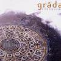

Celtic Lyrics Corner > Artists & Groups > Gráda > Endeavour > Cathain
|  | Cathain |
| Credits : | Rónán Ó Snodaigh |
| Appears On : | Endeavour |
| Language : | Gaeilge (Irish Gaelic) |
| Lyrics : | English Translation : |
| Curfá : | Chorus (after each verse) : |
| Cathain a thiocfadh tú abhaile thugaim? | When will you come home to me? |
| Ó cár a dtagamar le chéile arís? | When will we be together again? |
| Cathain a thiocfadh tú abhaile thugaim? | When will you come home to me? |
| Fanadh mé ar an lá agus fanadh mé go dílís | I'll wait for that day and I'll stay loyal |
| Braithim go bhfuil tú in easnamh orm | I feel your absence |
| Ó braithim uait mé braithim tú i bhfad | I feel you far away |
| Braithim go bhfuil tú in easnamh orm | I feel that we're apart |
| 'S neadar cathain a bhlaisfidh mé do bheoladh arís | And I wonder when I'll taste your lips again |
| Tá'n spéir fós ós mo chion, an talamh céanna fúm | The sky's still up above, the same ground underneath |
| Na sléibhte i mo thimpeal mar a bhí siad a riamh | The mountains around me are as they ever were |
| Tá'n taoide ag lionadh 's ag trá mar a bhíonn | The tide is rising and retreating as it does |
| Ach ní ach ar leath shiúl 'tá mé gan tusa le mo thaobh | And I'm only seeing through half an eye since you left my side |
| Feiceann mé do shúile i mo bhrionglóidí | I see your eyes in my dreams |
| Cloiseann mé do gháire agus mé í mo luí | I hear your laughter where I'm laid |
| Feiceann mé an bóthar ó mo fhuinneog ins an tigh | I see the road from the window in my house |
| An bóthar úd a thóg tú gan mise le do thaobh | The road you took without me by your side |
| (Curfá 2x) | (Chorus 2x) |